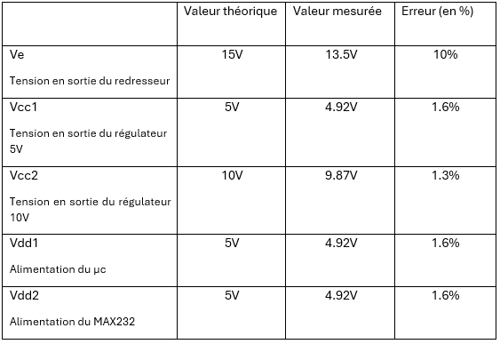
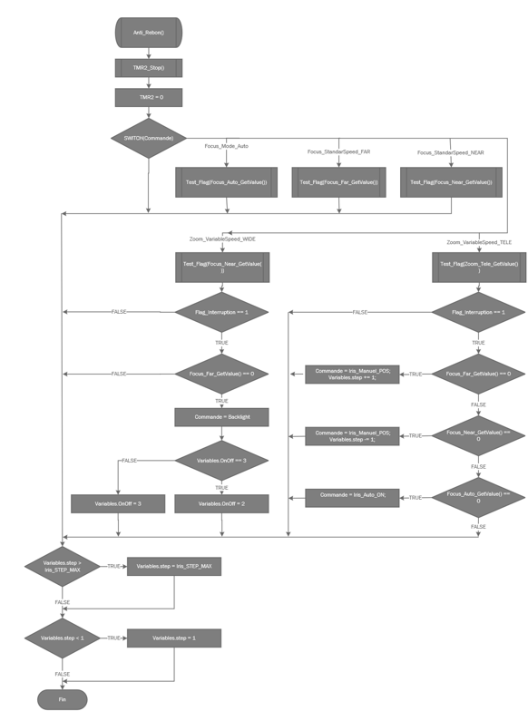

d'un système
L'arrêt de fabrication de la carte de pilotage du lot CIZ60 avait rendu impossible toute réparation en cas de panne, ce qui avait déjà causé une intervention interrompue en centrale. Face à ce risque d'indisponibilité opérationnelle, ma mission incluait de proposer une solution de maintenance durable.
J'ai conçu la nouvelle carte en facilitant délibérément sa maintenabilité : les composants susceptibles d'être remplacés (microcontrôleur, MAX232, régulateurs linéaires, fusible) ont été montés en traversant pour permettre une désolidarisation facile. L'ajout d'un porte-fusible et d'un connecteur de reprogrammation (J9/PICkit) permet une intervention rapide sans dessoudage. J'ai également rédigé un document de compte-rendu complet contenant le schéma électrique, les tensions mesurées et les organigrammes du programme, pour que tout technicien de Tunzini MN puisse intervenir sur le lot.


Cette compétence m'a fait prendre conscience que concevoir pour la maintenance est une discipline à part entière. Penser au technicien qui interviendra dans 2 ans sur ma carte a orienté des choix qui semblent anodins (traversant vs CMS, connecteur PICkit) mais qui ont un impact concret. Le livrable documentaire (schéma + compte-rendu + code) constitue une vraie valeur ajoutée pour l'entreprise : Tunzini MN dispose maintenant d'une traçabilité complète sur ce lot alors qu'elle n'en avait aucune avant. Je reconnaîs toutefois que la bibliothèque VISCA gagnerait à être restructurée (une fonction par commande) pour faciliter les interventions futures.